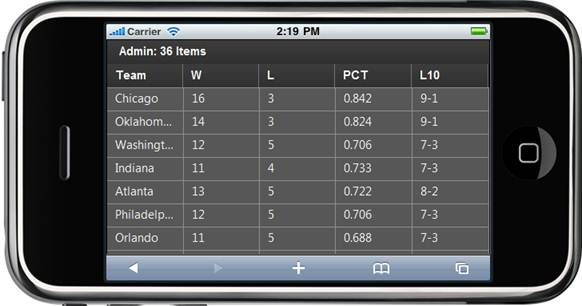
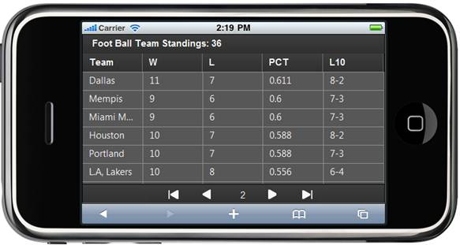

1. Create a model in the application (Refer to Getting Started>Adding a Model to the Razor Application).
2. Add the following code in the Index.cshtml file to create the Grid control in the view.
|
View [cshtml] @(new HtmlString(Html.MobSyncfusion().Grid<Standings>("grid", (MobGridPropertiesModel<Standings>)(ViewData["GridModel"])).ToString())) | |
|
View [ASPX]
<%= Html.MobSyncfusion().Grid<Standings>("grid", (MobGridPropertiesModel<Standings>)(ViewData["GridModel"])) %> |
|
3. Create a MobGridPropertiesModel object in the Index method. Assign grid properties in this model and pass the model from the controller to the view using the ViewData class as shown below:
|
public ActionResult Index() { MobGridPropertiesModel<Standings> model = new MobGridPropertiesModel<Standings>() { Caption = "Foot Ball Team Standings", ActionMode= MobActionMode.JSON, AllowPaging=true, AllowPaging = true, PageSetting = new PageSettings() { PageCount=12, ShowPager=true }
}; model.Columns.Add(new MobGridColumn<Standings>() { HeaderText="Team", MappingName="Team" }); model.Columns.Add(new MobGridColumn<Standings>() { HeaderText = "W", MappingName = "Won" }); model.Columns.Add(new MobGridColumn<Standings>() { HeaderText = "L", MappingName = "Loss" }); model.Columns.Add(new MobGridColumn<Standings>() { HeaderText = "PCT", MappingName = "Percent" }); model.Columns.Add(new MobGridColumn<Standings>() { HeaderText = "L10", MappingName = "L10" }); ViewData["GridModel"] = model; // pass the model from controller to view using ViewData. return View(); } |
4. In order to work with paging/sorting actions, create a Post method for Index actions and bind the data source to the grid as shown in the following code.
|
Controller /// <summary> /// Paging/sorting Requests are mapped to this method. This method invokes the MobHtmlActionResult /// from the grid. Required response is generated. /// </summary> /// <param name="args">Contains paging properties. </param> /// <returns> /// MobHtmlActionResult returns the data displayed on the grid. /// </returns> [AcceptVerbs(HttpVerbs.Post)] public ActionResult Index(MobGridParams args) { var data = StandingsDetails.GetData(); return data.MobGridJSONActions<Standings>();
} |
5. Run the application. The grid will appear as shown below.

Figure 48: Grid with Data
6. Swipe up on the content area to navigate to next page. Then the pager bar will be displayed at the bottom of the page as shown in the below screenshot.

Figure 49: Grid—Pager Bar